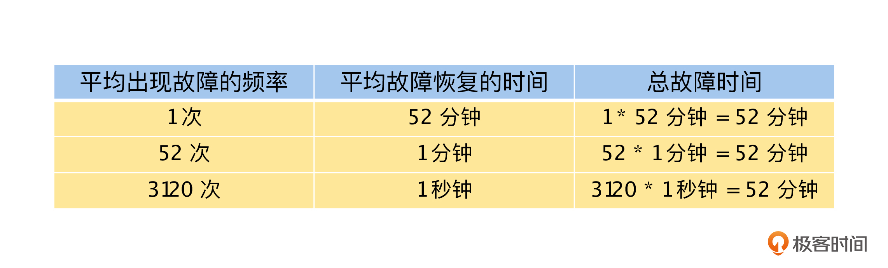
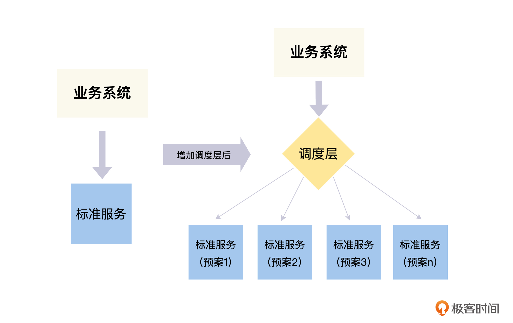
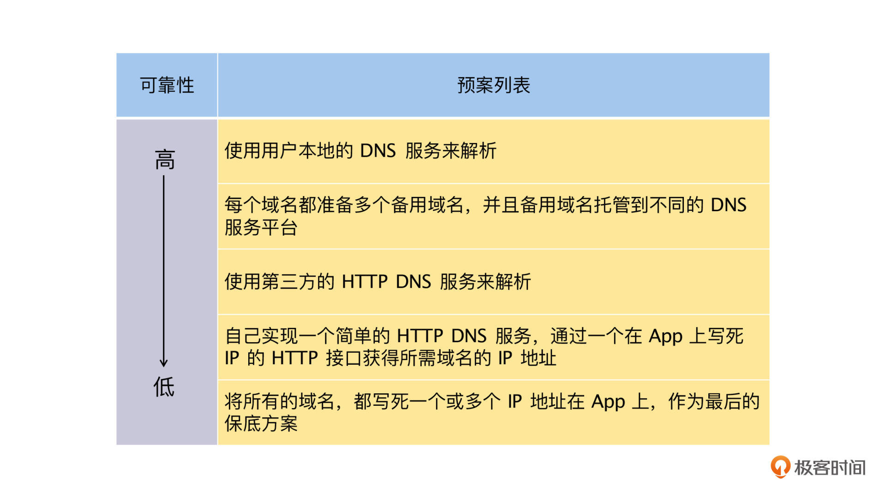
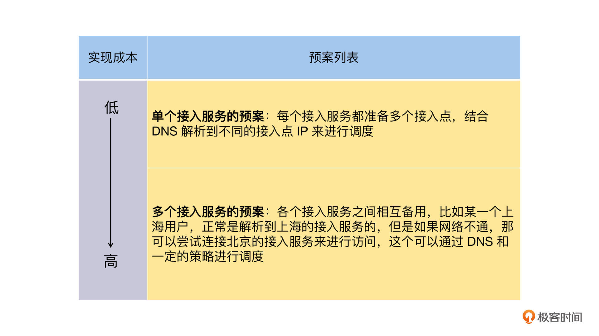
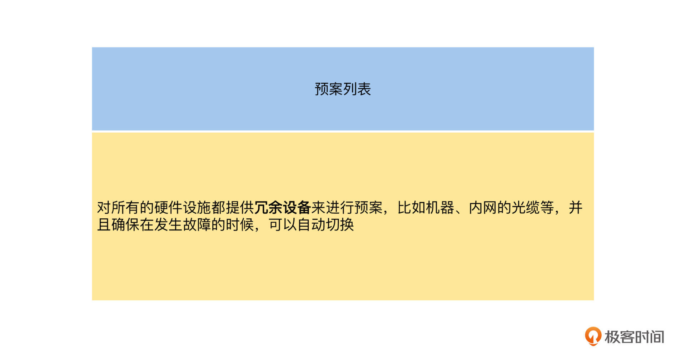
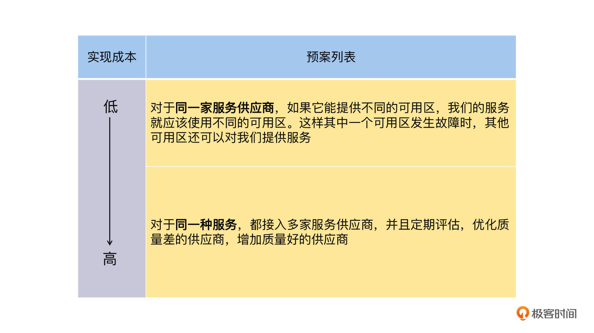

- 00 开篇词 掌握好学习路径，分布式系统原来如此简单.md.html
- 01 导读：以前因后果为脉络，串起网状知识体系.md.html
- 02 新的挑战：分布式系统是银弹吗？我看未必！.md.html
- 03 CAP 理论：分布式场景下我们真的只能三选二吗？.md.html
- 04 注册发现： AP 系统和 CP 系统哪个更合适？.md.html
- 05 负载均衡：从状态的角度重新思考负载均衡.md.html
- 06 配置中心：如何确保配置的强一致性呢？.md.html
- 07 分布式锁：所有的分布式锁都是错误的？.md.html
- 08 重试幂等：让程序 Exactly-once 很难吗？.md.html
- 09 雪崩（一）：熔断，让故障自适应地恢复.md.html
- 10 雪崩（二）：限流，抛弃超过设计容量的请求.md.html
- 11 雪崩（三）：降级，无奈的丢车保帅之举.md.html
- 12 雪崩（四）：扩容，没有用钱解决不了的问题.md.html
- 13 可观测性（一）：如何监控一个复杂的分布式系统？.md.html
- 14 可观测性（二）：如何设计一个高效的告警系统？.md.html
- 15 故障（一）：预案管理竟然能让被动故障自动恢复？.md.html
- 16 故障（二）：变更管理，解决主动故障的高效思维方式.md.html
- 17 分片（一）：如何选择最适合的水平分片方式？.md.html
- 18 分片（二）：垂直分片和混合分片的 trade-off.md.html
- 19 复制（一）：主从复制从副本的数据可以读吗？.md.html
- 20 复制（二）：多主复制的多主副本同时修改了怎么办？.md.html
- 21 复制（三）：最早的数据复制方式竟然是无主复制？.md.html
- 22 事务（一）：一致性，事务的集大成者.md.html
- 23 事务（二）：原子性，对应用层提供的完美抽象.md.html
- 24 事务（三）：隔离性，正确与性能之间权衡的艺术.md.html
- 25 事务（四）：持久性，吃一碗粉就付一碗粉的钱.md.html
- 26 一致性与共识（一）：数据一致性都有哪些级别？.md.html
- 27 一致性与共识（二）：它们是鸡生蛋还是蛋生鸡？.md.html
- 28 一致性与共识（三）：共识与事务之间道不明的关系.md.html
- 29 分布式计算技术的发展史：从单进程服务到 Service Mesh.md.html
- 30 分布式存储技术的发展史：从 ACID 到 NewSQL.md.html
- 春节加餐 技术债如房贷，是否借贷怎样取舍？.md.html
- 春节加餐 深入聊一聊计算机系统的时间.md.html
- 春节加餐 系统性思维，高效学习和工作的利器.md.html
- 结束语 在分布式技术的大潮流中自由冲浪吧！.md.html
- 捐赠
15 故障（一）：预案管理竟然能让被动故障自动恢复？
你好，我是陈现麟。
通过学习“监控”与“告警”这两节课的内容，你已经学会如何利用 Metric、Trace 和 Log 搭建一个可观测系统，去监控极客时间这样的分布式系统。并且知道了在系统出现故障时，职责明确的告警机制，可以在第一时间通知到相关的工程师。
但是，我们现在还不能掉以轻心，因为极客时间是 7 * 24 小时无间断为用户提供服务的，能掌控和发现故障还不够，如果故障出现了，我们还必须能快速恢复故障。所以本课我们一起来讨论另外一个非常重要的问题：如果系统发生故障了，我们应该怎么来快速恢复故障？
故障恢复是一个非常复杂的问题，这里我们首先要讨论的是：怎么理解故障，以及它的评估标准是什么？只有定义好问题，并且确定好标准，我们才能明确解决问题的方向。
如何理解故障及其评估标准
对于如何理解故障和故障评估标准的问题，我认为可以从两个方面去理解和思考。
首先，评价故障的标准一定不是有或没有。虽然我们不希望有故障发生，但这却是所有的工程师必须面对的问题。同时，我们不能出现故障就处理，没有故障我们就什么也不做，我们要积极地应对故障。在系统设计的时候，应该充分考虑到故障的存在，并且做好充分的预案，才能在故障发生时，将系统的影响降到最低。
既然我们必须面对故障，那么应该如何评估一个故障的水平呢？我认为有两个指标非常重要。
- 平均出现故障的频率：指平均多少时间出现一次故障，这个频率越低越好。
- 平均故障恢复的时间：指出现故障后，系统在多长时间恢复到正常状态，这个时间越短越好，并且，我认为这是一个更关键的指标。
我们可以这样来思考上面的两个指标，假设我们的系统可用性 SLA 是 99.99%，那么只要全年故障时间不超过 52 分钟，就是符合要求的。但是，对于这个 52 分钟的故障时间，却有不同的情况，如下表所示，如果是在线用户数等其他情况一样的前提下，1 个持续 52 分钟的故障和 52 个持续 1 分钟的故障，还有 3120 个持续 1 秒的故障，你认为哪一种情况对用户的影响最小呢？- 
聪明的你一定会选择 3120 个持续 1 秒的故障，因为这样的故障只会导致用户的某几个请求失败，用户自己或者系统内部自动重试一下就好了，对体验的影响非常小。并且，这种情况用户一般是能接受的，因为在进出电梯等情况下，也会经常出现偶发的网络错误。
如果是 52 个持续 1 分钟的故障，那么用户会明确感知到系统出现故障。而如果是 1 次 52 分钟的故障，那么故障期间，所有的用户都不能使用系统提供的服务，其中的损失和影响是无法估计的。当然，这里并不是说平均出现故障频率这个指标不重要，如果频繁出现短暂的故障也会影响到用户的体验。
所以，我们通过上面的讨论，就得到了两个关键的结论：一方面我们应该在事前做好故障避免，降低平均出现故障的频率；另一方面，如果出现故障了，降低平均故障恢复的时间是非常关键的指标。
到这里，我们就知道了出现故障后，快速恢复是非常关键的指标。那么，具体应该如何快速恢复故障呢？
对于这个问题，根据我长期在系统稳定性建设方面的经验，我认为可以采用分治法。根据故障是由于宕机等被动原因，还是由于系统迭代过程中，人为引入等主动原因导致的，将故障分为被动故障和主动故障，然后我们再一一来讨论如何快速恢复。
由于故障恢复涉及的内容比较多，所以我们将用两节课的时间来讨论这个问题，这节课我将先和你一起讨论如何快速恢复被动故障。通过分析被动故障的来源，我们可以从中归纳出被动故障的特点，推导出处理被动故障的方法——预案调度，然后再通过一个案例，来讨论预案调度具体的实施方法，最后梳理被动故障的预案，和你分享我的经验。
被动故障的分析与思考
被动故障的来源
我们先一起来分析一下都有哪些原因会引发被动故障。依据我们对被动故障的定义，从用户的 App 发起请求到系统提供服务的过程中，被动故障的来源主要出现在以下四个地方。
- DNS 解析问题：用户本地网络的 DNS 服务不能将我们的域名正确解析到 IP 地址。
- 网络连通性问题：用户已经解析到正确的 IP 地址，但是从用户网络到我们服务器的 IP 地址之间的网络慢或者不通。
- 系统内部的硬件设施故障：比如机器突然宕机，内部网线中断等。
- 系统依赖的各种第三方服务：比如 CDN 服务、短信网关、语音识别等第三方服务故障。
当我们结合平时工作中的案例去分析上述问题时，会发现被动故障有一些特点，首先是它每一次出现的原因都各不相同。比如 DNS 解析的问题，有可能是用户本地的 DNS 服务配置错误，也有可能是 DNS 服务器网络的问题，还有可能是 DNS 服务器的问题，并且这些原因都不受我们的控制，这也是被动故障的一个特点。
处理被动故障的思维方式
对于各不相同以及完全不受我们控制的原因，应该如何处理呢？其实这个问题在计算机领域有非常明确的答案：计算机科学领域的任何问题都可以通过增加一个间接的中间层来解决。
由于出故障的地方不受我们控制，并且每一次故障的原因可能都不相同，通过 case by case 的方式，来一一来解决是不可能的。但是也正是因为不受我们的控制，所以这些出问题的地方都有相对标准的服务和方案，不论是服务还是硬件，不会随着业务的变化而快速变化，并且故障来源的数量是非常有限的。
那我们就可以从细节中跳出来，从更高层次的角度来思考这些问题，对于每一个故障来源，我们都可以准备多个预案，然后通过增加一个中间层来进行自动调度，对外屏蔽这些问题，从而达到快速恢复故障的目的，我们将这个方法称之为预案调度。
通过预案调度来恢复故障
接下来，我们一起来讨论在实际工作中，如何通过预案调度来处理被动故障。就拿我亲身经历的一个真实故事来说吧，当时我们就是用了预案调度，解决了第三方服务 CDN 的下载故障，以后你处理类似问题的时候，也可以借鉴其中的思路。
公司在刚开拓东南亚业务的时候，因为那边的基础设施比国内要差不少，所以用户经常出现图片加载失败的情况，非常影响他们的体验。
当时，研发工程师们将国内、国外所有的 CDN 供应商都换了一遍，但每一家 CDN 供应商都或多或少出现过问题，比如 CDN 供应商 A 在越南的服务质量不错，但是在泰国很不好；CDN 供应商 B 则是在泰国的服务质量不错，但是到了马来西亚却很不好。并且工程师们还没有任何的办法来优化 CDN 的问题，因为这些都是第三方 CDN 供应商自身的问题。
那时候，我们也走了一些弯路，花了不少的时间去定位问题，通过客户端的日志分析出用户 CDN 图片加载失败的时间点、 URL 和当时域名解析的 IP 地址，然后推送给 CDN 供应商来优化。
这样做有一定的效果，但是需要注意两个问题，一是，我们只能在故障出现后去解决问题，这时用户已经被影响了，体验很不好；二是，导致故障的问题没有办法收敛。因为网络本身是动态的， CDN 供应商将一个接入点的网络质量优化好，等到下次外部网络环境发生变化，就又会出现新的问题。
结合上述思考，最后我们采用如下的方法解决了问题：对每一张图片都提供两个以上供应商的 CDN 链接返回给客户端，并且根据之前的网络访问数据，统计其网络质量，按照质量从优到低排序；客户端则依据返回的 CDN 列表，从优到低下载图片，直到下载成功为止。
现在我们来总结一下，通过预案调度解决被动故障的思路。首先，使用“对每一张图片都提供两个以上供应商的 CDN 链接，并且按质量从优到低排序”的方法，其实就是为每一张图片的 CDN 服务准备了多个下载预案，并且这些预案是有优先级的。
然后，使用“客户端依据返回的 CDN 列表，从优到低下载图片，直到下载成功为止”的方法，就是在客户端实现了一个，通过 CDN 链接下载图片的预案调度层，它依据当时的网络情况，择优选择 CDN 供应商，来提供图片的下载服务。就这样，这个问题就彻底解决了，一个核心思考点是：虽然每一家 CDN 供应商都有下载失败的情况，但是一张图片几乎不会出现，所有 CDN 供应商都下载失败的情况。
通过上面的例子，我们将预案调度的思路总结为下图。之前，我们的业务系统直接调用标准服务，在增加调度层之后，业务系统直接调用调度层，不需要关心具体的标准服务（即预案）。所以我们可以通过增加调度层的方式，来屏蔽各种预案之间的差异，并且可以在不同的预案之间进行自动最优的调度。

被动故障的预案梳理
通过上面的学习，你已经掌握了通过预案调度来解决被动故障的思路，这个时候，你一定想知道，有哪些场景适合通过预案调度，来快速恢复被动故障呢？
我从被动故障来源的维度，给你总结了解决每一类被动故障的预案列表，你可以先通读，理解一下预案列表的设计思路，在有需要的时候，可以直接查询这个列表，具体的预案细节如下。
第一，对于 DNS 解析问题，因为是解析服务失败导致的，所以我们可以通过提供不同的域名解决服务来解决问题，依据可靠性从高到低依次为。

第二，网络连通性的问题与网络链路有关，我们可以通过提供不同接入的网络链路来解决问题，依据实现成本从低到高依次为。

第三，对于系统内部的硬件设施故障的问题，因为设备是我们可以控制的，所以处理方式比较简单，直接通过冗余设备的方式来解决。

第四，对于系统依赖的各种第三方服务，我们可以通过提高服务供应商的质量和数量来解决问题，依据实现成本从低到高依次为。

并且，对于“DNS 解析预案”和“网络连通性预案”这前两个预案来说，它们都是内置在客户端的，我认为比较好的方案是，将这两个层面实现一个统一的调度层，这一个调度层不仅用来快速恢复故障，还可以通过 App 端对网络性能数据的统计，实时提供当前网络性能最好的接入服务和 IP 地址。
对于“系统内部的硬件设施预案”，它的调度层可能不需要我们再次实现，因为系统的高可用已经覆盖了这个部分。比如机器宕机会导致上面跑的服务实例都挂掉，系统的服务注册发现模块会实时摘除这些实例的 IP 和 Port 信息，并且通知给相关的调用方。
对于“第三方服务的预案”，它的调度层可以实现为，通过实时的数据统计，来为我们的系统选择质量最好的第三方服务并且使用其服务。
通过上面被动故障的预案梳理，我们掌握了不同故障的预案都有哪些，这个不一定全面，如果你有更好的方案，也可以继续补充，这节课更重要的目标是讨论处理故障的思维方式。
总结
本节课，我们先讨论了应该如何理解故障，以及故障的评估标准：平均出现故障的频率和平均故障恢复时间。在 SLA 一定的情况下，平均故障恢复时间越短，对用户体验的影响就越小，所以快速恢复故障是一个非常关键的目标。
接着，我们分析了被动故障的来源都有哪些，我们发现这些故障完全不受我们的控制，可能每一个 case 的原因都不相同，我们很难通过穷举来消除故障，因此我们决定对可能出现故障的地方增加多个预案，通过增加一个中间层来进行调度，对外屏蔽这些问题，从而达到快速恢复故障的目的。
我们还详细讨论了被动故障各个来源的预案，在调度层通过对各个预案的实时数据统计，不仅能提供可用性非常高的服务，还可以为系统提供最优质的服务，这个是提供高质量服务非常关键的优化点。
思考题
在工作中，你是否用过“通过增加一个中间层来解决复杂问题”的思路，你用它解决了哪些问题？
欢迎你在留言区发表你的看法。如果这节课对你有帮助，也推荐你分享给更多的同事、朋友。
© 2019 - 2023 Liangliang Lee. Powered by gin and hexo-theme-book.